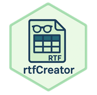
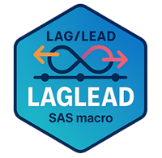

<!DOCTYPE html>
<html lang="ja">
<head>
  <meta charset="UTF-8" />
  <title>PharmaForest Gallery</title>
  <meta name="viewport" content="width=device-width, initial-scale=1, viewport-fit=cover">  <style>
  :root{
    --stage-w: 500px;   /* キャンバス幅(px) */
    --stage-h: 600px;    /* キャンバス初期高さ(px) - 後でJSで上書き可 */
    --logo-size: 140px; /* ロゴの一辺（px） */
    --left-width: 33vw; /* ← 追加：左の幅を明示（元々未定義） */
  }

    *{ box-sizing: border-box; }
    body{
      margin:0; background:#0f0f11; color:#eaeaea; font-family:system-ui, sans-serif; height:100vh; overflow:hidden;
    }
    .layout{
      display:flex; height:100vh; gap:0; 
    }
    /* 左：縦スクロール列 */
    .left{
      width:var(--left-width); border-right:1px solid #222; position:relative; background:#111;
    }
    .left .logo{ cursor: pointer; }
    .carousel{
      display:flex; flex-direction:column;
      overflow-y:auto; height:100%; padding:40px 24px;
      scroll-snap-type: none;
      scroll-behavior: smooth;
      -webkit-overflow-scrolling: touch;
      touch-action: pan-y;                 /* ← スマホでネイティブ縦スクロール */
      overscroll-behavior-y: contain;      /* ← iOS/Androidで過剰な弾み防止 */
    }
    /* スクロール中は重いトランジションを殺して滑らかに */
    .carousel.is-scrolling .logo{
      transition: none !important;
      box-shadow: none !important;
    }

    .logo{
      flex:0 0 auto; width:100%; max-width:520px; height:var(--card);
      margin: -10px auto 22px; /* ちょい重なり感 */
      background:#232326; border-radius:20px; scroll-snap-align:center;
      display:flex; align-items:center; gap:16px; padding:16px 18px;
      transition: transform .25s, box-shadow .25s, background .25s;
      box-shadow:0 0 0 rgba(0,0,0,0);
      border:1px solid #2b2b2f;
    }
    .logo:hover{ transform:scale(0.80); }
    .logo.active{
      transform:scale(1.1);
      box-shadow: 0 0 15px rgba(0, 170, 255, 0.8), /* 外側に青く発光 */
                  0 0 30px rgba(0, 170, 255, 0.5); /* さらに外に柔らかく */
      border: 2px solid rgba(0, 170, 255, 0.9);    /* 枠線も青く */
      z-index:5;
    }
    .logo img{
      width:160px; height:160px; object-fit:contain; flex:0 0 auto; filter:drop-shadow(0 2px 8px rgba(0,0,0,.3));
      border-radius:16px; background:#232326;
    }
    .logo .meta{
      min-width:0; display:flex; flex-direction:column; gap:8px;
    }
    .logo .title{
      font-weight:700; font-size:18px; line-height:1.2; color:#fff; white-space:nowrap; overflow:hidden; text-overflow:ellipsis;
    }
    .logo .hint{ font-size:12px; color:#9aa0a6; }
    /* 右：詳細 */
    .right{
      flex:1; padding:32px 40px; overflow:auto; position:relative;
     /* background: radial-gradient(800px 400px at 20% 10%, rgba(35,35,45,.28), transparent 60%) #0f0f11;*/
       /* 背景画像を指定 */
    background-image: url('./logo/picture_pharmaforest.png');

    /* 背景の表示方法 */
    background-size: cover;       /* 全体に拡大縮小して表示 */
    background-position: center;  /* 中央寄せ */
    background-repeat: no-repeat; /* 繰り返さない */
    }
    .panel{
      max-width:1100px; margin:0 auto;
      padding:28px 28px 32px; border:1px solid #2b2b2f; border-radius:20px; background: rgba(20, 20, 24, 0.7);
      box-shadow:0 10px 30px rgba(0,0,0,.28);
    }
    .panel .hero{
      display:flex; gap:20px; align-items:center; margin-bottom:16px;
    }
    .panel .hero img{
      width:96px; height:96px; object-fit:contain; background:#1b1b20; border-radius:16px; padding:8px;
      border:1px solid #2b2b2f;
    }
    .panel h1{ margin:0; font-size:24px; }
    .panel .badges{ display:flex; gap:8px; margin:8px 0 4px; flex-wrap:wrap; }
    .badge{
      font-size:12px; padding:4px 8px; border-radius:999px; border:1px solid #3b3b42; color:#cfd3dc; background:#1a1a1f;
    }
    .panel p{ color:#cfd3dc; line-height:1.7; }
    .panel a{ color:#8ab4ff; text-decoration:none; }
    .panel a:hover{ text-decoration:underline; }
    .panel .cta{
      margin-top:16px; display:flex; gap:10px; flex-wrap:wrap;
    }
    .btn{
      padding:10px 14px; border-radius:12px; border:1px solid #3b3b42; background:#1d1d22; color:#eaeaea; text-decoration:none;
      display:inline-flex; align-items:center; gap:8px;
    }
    .btn:hover{ background:#23232a; }
  
    /* 右上固定のカウンターボックス */
    .counter-widget{
      position:absolute;
      top:12px;
      right:12px;
      z-index:50;
      background: rgba(20,20,24,.6);
      border:1px solid #2b2b2f;
      border-radius:12px;
      padding:6px 8px;
      backdrop-filter: blur(6px);
    }
    .counter-widget img{
      display:block;
      margin:0;
      padding:0;
      border:0;
      vertical-align:bottom;
    }

    /* レスポンシブ（幅が狭い時は縦積み） */
    /* タブレット以下は縦積みレイアウトにする */
    @media (max-width: 980px){
      .layout{
        flex-direction: column;      
        height: 100dvh;              /* モバイルのURLバー対策 */
        min-height: 100vh;           /* 古端末フォールバック */
      }

      .left{
        width: 100%;
        height: 35vh;                 /* 上のリストを薄めに */
        border-right: none;
        border-bottom: 1px solid #222;
        min-height: 0;                /* 内部スクロール有効化の定番 */
      }

      .right{
        flex: 1 1 auto;               /* 残りを全部使う */
        min-height: 0;                /* 内部スクロール可に */
        overflow: auto;               /* 右パネルだけスクロール */
        padding: 20px 16px;
        padding-bottom: calc(24px + env(safe-area-inset-bottom, 0px)); /* 下バーに隠れない */
      }

      /* 右パネルの末尾に見えない余白（終端が隠れないように） */
      .panel::after{
        content: "";
        display: block;
        height: calc(24px + env(safe-area-inset-bottom, 0px));
      }

      /* ちょっと縮小系 */
      :root{ --card: 160px; }
      .panel{ max-width: 760px; padding: 20px; border-radius: 14px; }
      .panel .hero img{ width: 72px; height: 72px; }
      .badge{ font-size: 11px; padding: 3px 7px; }
      .logo{ height: var(--card); padding: 12px 14px; gap: 12px; }
      .logo img{ width: 120px; height: 120px; }
    }

    /* スマホはさらにコンパクト＆説明グリッド1列化 */
    @media (max-width: 600px){
      #panelDesc .info-grid{
        grid-template-columns: 1fr;
        gap: 6px 0;
      }
      #panelDesc img{ max-width: 90% !important; }
      .panel h1{ font-size: 20px; }
      .btn{ padding: 10px 12px; font-size: 14px; }
    }
    @media (hover: hover) and (pointer: fine){
      .logo:hover{ transform: scale(1.06); } /* ←ホバー時の拡大 */
    }

    #panelDesc .info { display:flex; flex-direction:column; gap:12px; }
    #panelDesc .summary { margin:0; color:#cfd3dc; line-height:1.7; }

    #panelDesc .info-grid{
      display:grid;
      grid-template-columns: 160px 1fr; /* ← ラベル列幅はここで調整 */
      gap: 8px 16px;                    /* 行間 / 列間 */
      align-items:start;
    }

    #panelDesc .label{
      color:#9aa0a6;
      font-size:12px;
      font-weight:600;
      letter-spacing:.2px;
    }

    #panelDesc .value{
      color:#eaeaea;
      line-height:1.7;
      min-width:0; /* 長文の折返し安定化 */
      word-break: break-word;
    }

  /* 追加：チェックOFF時に薄くする */
  .free.dim img{
    filter: grayscale(1) brightness(.7) opacity(.35);
    transition: filter .2s ease, opacity .2s ease;
  }

  /* 追加：フィルターUI */
  .filters{
    display:flex; gap:12px; flex-wrap:wrap;
    margin: 4px 0 0;
  }
  .filters label{
    display:inline-flex; gap:8px; align-items:center;
    font-size:14px; background:#1a1a1f; border:1px solid #3b3b42;
    padding:8px 12px; border-radius:999px; cursor:pointer;
  }
  .filters input{ accent-color:#39a0ff; }

  /* ── Honeycomb grid ───────────────────────────── */
  .free-outer{
    width:100%;
    overflow:auto;           /* ステージが大きくなったらスクロール */
    margin-bottom: clamp(16px, 2vw, 32px);
    margin-top: 0;       /* もし余白があればゼロに */
  }

  .free-wrap{
    position: relative;
    margin: 12px auto 0;
    width:  calc(var(--stage-w) * 1px);
    height: calc(var(--stage-h) * 1px);
    background: transparent;
  }

  .free{
    position: absolute;
    width: var(--logo-size);
    height: var(--logo-size);
    /* ← ここがpx固定（%は使わない） */
    top:  calc(var(--y, 0) * 1px);
    left: calc(var(--x, 0) * 1px);
    transform: translate(-50%, -50%) scale(var(--scale, 1));
  }

  /* 画像は四角でOK。透明背景があるので視覚的な干渉なし */
  .free img{
    width: var(--logo-img-pct);
    height: var(--logo-img-pct);
    object-fit: contain;
    -webkit-user-drag: none; user-select: none;
  }

  /* 重なった時の操作性確保：ホバーしたものを最前面に */
  .free:hover{ transform: translate(-50%, -50%) scale(0.80); z-index: 10; }

  /* スマホ時は少し詰めるなどの調整も可 */
  @media (max-width: 600px){
    .free-wrap{ aspect-ratio: 4/5; }
  }

  </style>
</head>
<body>

<div class="layout">
  <!-- 左：ロゴリスト（縦スクロール） -->
  <aside class="left">
    <div class="carousel" id="carousel">
      <!-- data-key は下の items[] と対応させる -->
      <div class="logo" data-key="pharmaforest">
        
        <div class="meta">
          <div class="title">PharmaForest</div>
          <div class="hint">Package Repository</div>
        </div>
      </div>
      <div class="logo" data-key="forester">
        
        <div class="meta">
          <div class="title">Foresters</div>
          <div class="hint">Contributors</div>
        </div>
      </div>
      <div class="logo" data-key="oncoplotter">
        
        <div class="meta"><div class="title">OncoPlotter</div><div class="hint">Plot Tools for Oncology Area</div></div>
      </div>
      <div class="logo" data-key="sashash">
        
        <div class="meta"><div class="title">sashash</div><div class="hint">Hash Tools</div></div>
      </div>
      <div class="logo" data-key="sas_dataset_json">
        
        <div class="meta"><div class="title">SAS Dataset JSON</div><div class="hint">Dataset JSON Converter</div></div>
      </div>
      <div class="logo" data-key="saspacer">
        
        <div class="meta"><div class="title">SASPACer</div><div class="hint">SAS Package Generator</div></div>
      </div>
      <div class="logo" data-key="misc">
        
        <div class="meta"><div class="title">Misc</div><div class="hint">Miscellaneous Utilities</div></div>
      </div>
      <div class="logo" data-key="sas_faker">
        
        <div class="meta"><div class="title">SAS_FAKER</div><div class="hint">Dummy Data Generator</div></div>
      </div>
      <div class="logo" data-key="saslogchecker">
        
        <div class="meta"><div class="title">SASLogChecker</div><div class="hint">Log Checking Utility</div></div>
      </div>
      <div class="logo" data-key="sas_compare">
        
        <div class="meta"><div class="title">SAS_Compare</div><div class="hint">Compare Support Tools</div></div>
      </div>
      <div class="logo" data-key="rtfcreator">
        
        <div class="meta"><div class="title">RTF Creator</div><div class="hint">RTF Creator</div></div>
      </div>
      <div class="logo" data-key="shutter_chance">
        
        <div class="meta"><div class="title">Shutter Chance</div><div class="hint">Snapshot Tools</div></div>
      </div>
      <div class="logo" data-key="devil">
        
        <div class="meta"><div class="title">Devil</div><div class="hint">Playful Ideas for a Break</div></div>
      </div>
      <div class="logo" data-key="xattr_kit">
        
        <div class="meta"><div class="title">xattr Kit</div><div class="hint">Extended Attributes Toolkit</div></div>
      </div>
      <div class="logo" data-key="cloak">
        
        <div class="meta"><div class="title">Cloak</div><div class="hint">Check-in/Check-out Storekeeper</div></div>
      </div>
      <div class="logo" data-key="vis_review_kit">
        
        <div class="meta"><div class="title">Vis Review Kit</div><div class="hint">Visual Review Toolkit</div></div>
      </div>
      <div class="logo" data-key="odstable_layoutshowcase">
        
        <div class="meta"><div class="title">ODSTable Layout Showcase</div><div class="hint">Showcase for ODSTable Layouts</div></div>
      </div>
      <div class="logo" data-key="maxims4sas">
        
        <div class="meta"><div class="title">maxims4sas</div><div class="hint">Best Practices for SAS</div></div>
      </div>
      <div class="logo" data-key="laglead">
        
        <div class="meta"><div class="title">laglead</div><div class="hint">Dynamic lead/lag value access</div></div>
      </div>
      <div class="logo" data-key="ctcae5_grader">
        
        <div class="meta"><div class="title">ctcae5_grader</div><div class="hint">CTCAE Grader</div></div>
      </div>
      <div class="logo" data-key="love_matrix">
        
        <div class="meta"><div class="title">Love Matrix</div><div class="hint">Loving matrix via FCMP</div></div>
      </div>
      <div class="logo" data-key="SASPACerShiny">
        
        <div class="meta"><div class="title">SASPACerShiny</div><div class="hint">Shiny App of SASPACer</div></div>
      </div>
      <div class="logo" data-key="change_tracer_dog">
        
        <div class="meta"><div class="title">Change Tracer Dog</div><div class="hint">Change Tracer Macros</div></div>
      </div>
      <div class="logo" data-key="yaml_writer">
        
        <div class="meta"><div class="title">YAML Writer</div><div class="hint">YAML Generation Tool</div></div>
      </div>
      <div class="logo" data-key="adamski">
        
        <div class="meta"><div class="title">Adamski</div><div class="hint">Adam Creation Tool</div></div>
      </div>
      <div class="logo" data-key="RWDExpress">
        
        <div class="meta"><div class="title">RWD Express</div><div class="hint">RWD handling toolkit</div></div>
      </div>
      <div class="logo" data-key="freqsum">
        
        <div class="meta"><div class="title">freqsum</div><div class="hint">Frequency and Summary Tool</div></div>
      </div>
      <div class="logo" data-key="qc_cat_referee">
        
        <div class="meta"><div class="title">QC Cat Referee</div><div class="hint">toolkit for automated data quality control</div></div>
      </div>
      <div class="logo" data-key="SASToolbox">
        
        <div class="meta"><div class="title">SASToolbox</div><div class="hint">Toolbox to handle files all at once</div></div>
      </div>
      <div class="logo" data-key="trial_flow">
        
        <div class="meta"><div class="title">Trial Flow</div><div class="hint">Macros to create flow diagrams</div></div>
      </div>
      <div class="logo" data-key="valivali">
        
        <div class="meta"><div class="title">Valivali</div><div class="hint">Toolbox for validation</div></div>
      </div>
      <div class="logo" data-key="mergex">
        
        <div class="meta"><div class="title">Mergex</div><div class="hint">Merge methods for non-standard situations</div></div>
      </div>
      <div class="logo" data-key="basketMiningKit">
        
        <div class="meta"><div class="title">Basket Mining Kit</div><div class="hint"> Package for Association analysis</div></div>
      </div>
      <div class="logo" data-key="datacut_sas">
        
        <div class="meta"><div class="title">Datacut_SAS</div><div class="hint">Data Cutting Tool</div></div>
      </div>
      <div class="logo" data-key="retro_spell_check">
        
        <div class="meta"><div class="title">Retro_Spell_Check</div><div class="hint">Batch Spell Verifier</div></div>
      </div>
      <div class="logo" data-key="sas_dataset_toon">
        
        <div class="meta"><div class="title">sas_dataset_toon</div><div class="hint">Toon generator</div></div>
      </div>
      <div class="logo" data-key="defensivechk">
        
        <div class="meta"><div class="title">defensivechk</div><div class="hint">Defensive checks macros</div></div>
      </div>
      <div class="logo" data-key="GetCDISCCodelist">
        
        <div class="meta"><div class="title">GetCDISCCodelist</div><div class="hint">Get CDISC Codelist</div></div>
      </div>
      <div class="logo" data-key="forest_navigator">
        
        <div class="meta"><div class="title">Dr. Forest, Morio</div><div class="hint">Master Navigator of PharmaForest</div></div>
      </div>
      <div class="logo" data-key="apple">
        
        <div class="meta"><div class="title">Dr. Apple</div><div class="hint">Support Navigator of PharmaForest</div></div>
      </div>
      <div class="logo" data-key="Rio">
        
        <div class="meta"><div class="title">Rio</div><div class="hint">Support Navigator of PharmaForest</div></div>
      </div>
      <div class="logo" data-key="lady">
        
        <div class="meta"><div class="title">SAS Package Lady (Oba-chan) </div><div class="hint">Diner auntie nearby PharmaForest</div></div>
      </div>
    </div>
  </aside>

  <!-- 右：説明パネル -->
  <main class="right" id="rightPanel">
  </main>
</div>

<script>
  // 右パネルに出す内容
  const items = {
    pharmaforest: {
      title: "PharmaForest",
      img: "./logo/pharmaforest.png",
      desc: 
      `
      A collaborative repository of SAS packages for pharmaceutical industry, powered by PHUSE Japan OST (Open Source Technology) WG members—Hiroki Yamanobe, Yutaka Morioka, and Ryo Nakaya—showcasing the list of available packages. 

      <br><br> PharmaForest is built on top of SAS Packages Framework(SPF), which was developed by Bartosz Jablonski. There are more packages in his repository SAS Packages Archive(SASPAC).<br><br>
      `,
      badges: ["SAS Packages","Repository","Open-Source","MIT/Apache-2.0"],
      links: [{text:"PharmaForest", href:"https://github.com/PharmaForest"}, {text:"SPF", href:"https://github.com/yabwon/SAS_PACKAGES"},{text:"SASPAC", href:"https://github.com/SASPAC"}]
    },
    forester: {
      title: "Foresters (Contributors)",
      img: "./logo/squirrel.png",
      desc: 
      `
      Kudos to all contributors who have enriched the PharmaForest repository with their valuable contributions! Your efforts in developing, maintaining, and enhancing these packages are greatly appreciated and play a crucial role in advancing the SAS programming community within the pharmaceutical industry!<br><br>

      Bartosz Jablonski : Developer of SAS Packages Framework (SPF) and SAS Packages Archive (SASPAC).<br><br>

      Hiroki Yamanobe   : Co-founder and administrator of PharmaForest<br>
      Yutaka Morioka    : Co-founder and administrator of PharmaForest<br>
      Ryo Nakaya        : Co-founder and administrator of PharmaForest<br>
      Sharad Chhetri    : Project member of PharmaForest<br><br>

      Miyuki Aso        : devil(%sudoku_solver)<br>
      Akira Matsuzawa   : devil(%hanabi)<br>
      Teruko Narusawa   : RWDExpress<br>
      Shingo Suzuki and SAS Japan folks : SASToolbox<br>
      Rika Sakai        : Oncoplotter(test of %waterfall_plot)<br>
      Saikrishnareddy Yengannagari : sas_dataset_toon, defensivechk, GetCDISCCodelist<br>
      `,
      badges: ["SAS Packages","Repository","Open-Source"],
      links: [{text:"PharmaForest", href:"https://github.com/PharmaForest"}, {text:"SPF", href:"https://github.com/yabwon/SAS_PACKAGES"},{text:"SASPAC", href:"https://github.com/SASPAC"}]
    },
    oncoplotter: {
      title: "OncoPlotter",
      img: "./logo/oncoplotter.png",
      summary: "A SAS package to create figures commonly created in oncology studies.",
      license: "MIT",
      authors: ["PharmaForest"],
      maintainers: ["PharmaForest"],
      features: ["Kaplan-Meier Plot", "Swimmer Plot", "Waterfall Plot"],
      macros: ["%kaplan_meier_plot()","<br>%swimmer_plot()","<br>%waterfall_plot()"],
      badges: ["PharmaForest Original","Oncology","Output/Visualization","MIT"],
      links: [{text:"OncoPlotter", href:"https://github.com/PharmaForest/OncoPlotter"},{text:"Ask Dr.Forest", href:"https://chatgpt.com/g/g-6881d98193ec8191abb19e4e920cb64c-dr-forest"}]
    },
    sashash: {
      title: "SAS Hash",
      img: "./logo/sashash.png",
      summary: "Sashash package provides powerful and efficient hash-based lookup and validation tools specifically designed for SAS programming. Leveraging the robust capabilities of SAS hash objects, this package enables rapid and dynamic key-based data retrieval and existence checking directly within a single data step. This significantly reduces the need for separate sort and merge steps, streamlining workflows and enhancing performance.",
      license: "MIT",
      authors: ["Yutaka Morioka"],
      maintainers: ["Yutaka Morioka"],
      features: ["hash object"],
      macros: ["%kvlookup()","<br>%keycheck()","<br>%kduppchk()"],
      badges: ["hash","Data Utility","MIT"],
      links: [{text:"sashash", href:"https://github.com/PharmaForest/sashash"},{text:"Ask Dr.Forest", href:"https://chatgpt.com/g/g-6881d98193ec8191abb19e4e920cb64c-dr-forest"}]
    },
    sas_dataset_json: {
      title: "SAS Dataset JSON",
      img: "./logo/sas_dataset_json.png",
      summary: "Sas_dataset_json is a SAS macro package designed to support bi-directional conversion between CDISC-compliant Dataset-JSON format and SAS datasets.",
      license: "MIT",
      authors: ["Yutaka Morioka"],
      maintainers: ["Yutaka Morioka"],
      features: ["Dataset JSON"],
      macros: ["%m_sas_to_json1_1()","<br>%m_json1_1_to_sas()","<br>%m_sas_to_ndjson1_1()","<br>%m_ndjson1_1_to_sas()"],
      badges: ["Dataset JSON","Data Utility","MIT"],
      links: [{text:"sas_dataset_json", href:"https://github.com/PharmaForest/sas_dataset_json"},{text:"Ask Dr.Forest", href:"https://chatgpt.com/g/g-6881d98193ec8191abb19e4e920cb64c-dr-forest"}]
    },
    saspacer: {
      title: "SASPACer",
      img: "./logo/saspacer.png",
      summary: "A SAS package to help creating SAS packages. サスパッカー in the logo stands for SASPACer in Japanese. The package is to help creating SAS packages. Shaping onigiri(rice ball) by hands can be a bit challenging for beginners, but using onigiri mold makes it easy to form and provides a great introduction. Hope the mold(SASPACer) will help you to create your SAS package.",
      license: "MIT",
      authors: ["Ryo Nakaya"],
      maintainers: ["Ryo Nakaya"],
      features: ["SAS Packages"],
      macros: ["%ex2pac()","<br>%pac2ex()"],
      badges: ["SAS Packages","Other","MIT"],
      links: [{text:"SASPACer", href:"https://github.com/PharmaForest/SASPACer"},{text:"Ask Dr.Forest", href:"https://chatgpt.com/g/g-6881d98193ec8191abb19e4e920cb64c-dr-forest"}]
    },
    misc: {
      title: "misc",
      img: "./logo/misc.png",
      summary: "A SAS package to place miscellaneous macros, functions, etc..",
      license: "MIT",
      authors: ["PharmaForest"],
      maintainers: ["PharmaForest"],
      features: ["Miscellaneous Functions"],
      macros: ["%xpt2sas()","<br>%minimize_charlen()","<br>%roundsig()","<br>%rounddec()","<br>%color_swatch()",
      "<br>swapn() routine","<br>swapc() routine","<br>swapn_vec() routine","<br>swapc_vec() routine",
      "<br>%view_swatch(), <br>%line_swatch(), <br>%symbol_swatch()"],
      badges: ["PharmaForest Original","Miscellaneous","Other","MIT"],
      links: [{text:"misc", href:"https://github.com/PharmaForest/misc"},{text:"Ask Dr.Forest", href:"https://chatgpt.com/g/g-6881d98193ec8191abb19e4e920cb64c-dr-forest"}]
    },
    sas_faker: {
      title: "SAS_FAKER",
      img: "./logo/sas_faker.png",
      summary: "SAS package to create dummy data in CDISC format for clinical trials Purpose: A macro to generate dummy clinical trial data. Creates datasets in SDTM (DM, AE, SV, VS) and ADaM (ADSL, ADAE，ADVS, ADTTE) formats. Generates pseudo subject data, vital signs, study visits, and adverse events based on user-specified group numbers and sample sizes.",
      license: "MIT",
      authors: ["Yutaka Morioka"],
      maintainers: ["Yutaka Morioka"],
      features: ["Dummy Data"],
      macros: ["%sas_faker()"],
      badges: ["Dummy Data","Data Utility","MIT"],
      links: [{text:"sas_faker", href:"https://github.com/PharmaForest/sas_faker"},{text:"Ask Dr.Forest", href:"https://chatgpt.com/g/g-6881d98193ec8191abb19e4e920cb64c-dr-forest"}]
    },
    saslogchecker: {
      title: "SAS log checker",
      img: "./logo/saslogchecker.png",
      summary: "SAS log checker for extracting ERRORs, WARNINGs, and notable NOTEs — supports interactive and directory-wide runs.",
      license: "MIT",
      authors: ["Yutaka Morioka"],
      maintainers: ["Yutaka Morioka"],
      features: ["Log Checking"],
      macros: ["%interact_logchk()", "<br>%logchk2directory()"],
      badges: ["Log","Checker","MIT"],
      links: [{text:"saslogchecker", href:"https://github.com/PharmaForest/saslogchecker"},{text:"Ask Dr.Forest", href:"https://chatgpt.com/g/g-6881d98193ec8191abb19e4e920cb64c-dr-forest"}]
    },
    sas_compare: {
      title: "SAS Compare",
      img: "./logo/sas_compare.png",
      summary: "Package to compare SDTM/ADaM, TLF datasets, etc. Assume a double program in the pharmaceutical industry to compare main and sub.",
      license: "MIT",
      authors: ["Yutaka Morioka"],
      maintainers: ["Yutaka Morioka"],
      features: ["Compare and results checking"],
      macros: ["%ads_compare()"],
      badges: ["Compare","Checker","MIT"],
      links: [{text:"sas_compare", href:"https://github.com/PharmaForest/sas_compare"},{text:"Ask Dr.Forest", href:"https://chatgpt.com/g/g-6881d98193ec8191abb19e4e920cb64c-dr-forest"}]
    },
    rtfcreator: {
      title: "RTF Creator",
      img: "./logo/rtfcreator.png",
      summary: "A Package that allows you to easily create RTF files from your dataset.",
      license: "MIT",
      authors: ["Hiroki Yamanobe"],
      maintainers: ["Hiroki Yamanobe"],
      features: ["rtf tables creation"],
      macros: ["%rtfcreator()"],
      badges: ["rtf","ODSTable","Output/Visualization","MIT"],
      links: [{text:"rtfcreator", href:"https://github.com/PharmaForest/rtfcreator"},{text:"Ask Dr.Forest", href:"https://chatgpt.com/g/g-6881d98193ec8191abb19e4e920cb64c-dr-forest"}]
    },
    shutter_chance: {
      title: "Shutter_chance",
      img: "./logo/shutter_chance.png",
      summary: "SHUTTER_CHANCE: Visual Checkpoints for SAS Data Step Review. MACRO_VARIABLE_SHUTTER_CHANCE: Visually check the global and local status and values of SAS macro variables at any point.",
      license: "MIT",
      authors: ["Yutaka Morioka"],
      maintainers: ["Yutaka Morioka"],
      features: ["Snapshot in Data step/Macro"],
      macros: ["%shutter_chance()", "<br>%macro_variable_shutter_chance()"],
      badges: ["checkpoint","scope","Checker","MIT"],
      links: [{text:"shutter_chance", href:"https://github.com/PharmaForest/shutter_chance"},{text:"Ask Dr.Forest", href:"https://chatgpt.com/g/g-6881d98193ec8191abb19e4e920cb64c-dr-forest"}]
    },
    devil: {
      title: "Developer's Ideas Library(DEVIL)",
      img: "./logo/devil.png",
      summary: "Welcome to Developer's Ideas Library. Share your devils (any ideas at any stage) for trial, inspiring, showing-off, recruiting members for further development by showing POC, or even joking(for fun). You can see in description.sas of devil package that author is Any Developers. Devil package is completely different from the other packages in PharmaForest with its highly collaborative nature to welcome any ideas from anyone regardless of usefulness(we would rather prefer playful ones😁). Let's take a break, knock the door of devil!",
      license: "MIT",
      authors: ["Any Developers"],
      maintainers: ["PharmaForest"],
      features: ["Collaborative and open library"],
      macros: ["%chatDMS() (Ryo Nakaya)", "<br>text2morse() (Yutaka Morioka)", "<br>%life_game() (Yutaka Morioka)","<br>%sudoku_solver() (Miyuki Aso)","<br>%hanabi() (Akira Matsuzawa, Yutaka Morioka, Ryo Nakaya)"],
      badges: ["PharmaForest Original","devil","collaborative","400 years","Other","MIT"],
      links: [{text:"devil", href:"https://github.com/PharmaForest/devil"},{text:"Ask Dr.Forest", href:"https://chatgpt.com/g/g-6881d98193ec8191abb19e4e920cb64c-dr-forest"}]
    },
    xattr_kit: {
      title: "xattr_kit",
      img: "./logo/xattr_kit.png",
      summary: "xattr_kit is a package to simplify the management of SAS extended attributes",
      license: "MIT",
      authors: ["Yutaka Morioka"],
      maintainers: ["Yutaka Morioka"],
      features: ["Extended attributes management"],
      macros: ["%xattr_set_var()", "<br>%xattr_set_ds()", "<br>%list_xattr()", "<br>%xattr_in()", "<br>%xattr2macrovar()"],
      badges: ["extended attributes","Data Utility","MIT"],
      links: [{text:"xattr_kit", href:"https://github.com/PharmaForest/xattr_kit"},{text:"Ask Dr.Forest", href:"https://chatgpt.com/g/g-6881d98193ec8191abb19e4e920cb64c-dr-forest"}]
    },
    cloak: {
      title: "Cloak",
      img: "./logo/cloak.png",
      summary: "A simple FCMP-based check-in/check-out storage system using dictionary objects in SAS. Store and retrieve data by key, like a digital cloakroom.",
      license: "MIT",
      authors: ["Yutaka Morioka"],
      maintainers: ["Yutaka Morioka"],
      features: ["FCMP functions"],
      macros: ["cloak_num()", "<br>cloak_char(), <br>%queue_init(), <br>%enqueue(), <br>%dequeue(), <br>%queue_peek(), <br>%stack_init(), <br>%stack_push(), <br>%stack_pop(), <br>%stack_peek()"],
      badges: ["check-in/check-out","Data Utility","MIT"],
      links: [{text:"cloak", href:"https://github.com/PharmaForest/cloak"},{text:"Ask Dr.Forest", href:"https://chatgpt.com/g/g-6881d98193ec8191abb19e4e920cb64c-dr-forest"}]
    },
    vis_review_kit: {
      title: "Vis_Review_Kit",
      img: "./logo/vis_review_kit.png",
      summary: "Visual tools for reviewing and monitoring clinical trial data. A SAS macro package to support QC and exploration through graphical representations.",
      license: "MIT",
      authors: ["Yutaka Morioka"],
      maintainers: ["Yutaka Morioka"],
      features: ["Visual Review"],
      macros: ["%event_gant_excel()", "<br>%upset_plot()"],
      badges: ["Visual review","Output/Visualization","MIT"],
      links: [{text:"vis_review_kit", href:"https://github.com/PharmaForest/vis_review_kit"},{text:"Ask Dr.Forest", href:"https://chatgpt.com/g/g-6881d98193ec8191abb19e4e920cb64c-dr-forest"}]
    },
    odstable_layoutshowcase: {
      title: "odstable_layoutshowcase",
      img: "./logo/odstable_layoutshowcase.png",
      summary: "A SAS macro toolkit to showcase layout patterns using PROC ODSTABLE. Provides reusable examples of table design with multi-level headers, conditional formatting, composite layouts, and auto-generated RTF output. Ideal for clinical reporting, style template development, and training use.",
      license: "MIT",
      authors: ["Yutaka Morioka"],
      maintainers: ["Yutaka Morioka"],
      features: ["Showcase of odstable layout"],
      macros: ["%odstable_layoutshowcase()"],
      badges: ["ODSTable","Output/Visualization","MIT"],
      links: [{text:"odstable_layoutshowcase", href:"https://github.com/PharmaForest/odstable_layoutshowcase"},{text:"Ask Dr.Forest", href:"https://chatgpt.com/g/g-6881d98193ec8191abb19e4e920cb64c-dr-forest"}]
    },
    maxims4sas: {
      title: "maxims4sas",
      img: "./logo/maxims4sas.png",
      summary: "This package displays maxims that have deeply impressed me and that I wish to pass on to future generations.",
      license: "MIT",
      authors: ["Yutaka Morioka"],
      maintainers: ["Yutaka Morioka"],
      features: ["Output maxims for SAS programmers"],
      macros: ["%sas_maxims()"],
      badges: ["maxims","Other","MIT"],
      links: [{text:"maxims4sas", href:"https://github.com/PharmaForest/maxims4sas"},{text:"Ask Dr.Forest", href:"https://chatgpt.com/g/g-6881d98193ec8191abb19e4e920cb64c-dr-forest"}]
    },
    laglead: {
      title: "LAGLEAD",
      img: "./logo/laglead.png",
      summary: "SAS utilities for dynamic lead/lag value access.",
      license: "MIT",
      authors: ["Yutaka Morioka"],
      maintainers: ["Yutaka Morioka"],
      features: ["lead", "lag"],
      macros: ["%laglead()"],
      badges: ["lag","lead","Data Utility","MIT"],
      links: [{text:"laglead", href:"https://github.com/PharmaForest/laglead"},{text:"Ask Dr.Forest", href:"https://chatgpt.com/g/g-6881d98193ec8191abb19e4e920cb64c-dr-forest"}]
    },
    ctcae5_grader: {
      title: "CTCAE5_grader",
      img: "./logo/ctcae5_grader.png",
      summary: "ctcae5_grader is a SAS macro package that automates the grading of laboratory tests according to CTCAE v5.0. It standardises grading rules for common laboratory parameters (e.g. haematology, biochemistry, electrolytes) and provides character and numeric grade outputs.",
      license: "MIT",
      authors: ["Yutaka Morioka"],
      maintainers: ["Yutaka Morioka"],
      features: ["CTCAE", "Grading"],
      macros: ["%CTCAE_XXX() [e.g. %CTCAE_ALT()]"],
      badges: ["CTCAE","grading","Data Utility","MIT"],
      links: [{text:"ctcae5_grader", href:"https://github.com/PharmaForest/ctcae5_grader"},{text:"Ask Dr.Forest", href:"https://chatgpt.com/g/g-6881d98193ec8191abb19e4e920cb64c-dr-forest"}]
    },
    love_matrix: {
      title: "Love_Matrix",
      img: "./logo/love_matrix.png",
      summary: "Love_Matrix is a SAS macro toolkit for basic matrix operations (multiply, inverse, determinant, Cholesky, etc.) — works with PROC FCMP, no SAS/IML required.",
      license: "MIT",
      authors: ["Yutaka Morioka"],
      maintainers: ["Yutaka Morioka"],
      features: ["matrix", "operations"],
      macros: ["%matrix_mult(), <br>%matrix_inverse(), <br>%matrix_identity(), <br>%matrix_determinant(), <br>%matrix_transpose(), <br>%matrix_cholesky_decomposition()"],
      badges: ["matrix","love","Data Utility","MIT"],
      links: [{text:"love_matrix", href:"https://github.com/PharmaForest/love_matrix"},{text:"Ask Dr.Forest", href:"https://chatgpt.com/g/g-6881d98193ec8191abb19e4e920cb64c-dr-forest"}]
    },
    SASPACerShiny: {
      title: "SASPACerShiny",
      img: "./logo/SASPACerShiny.png",
      summary: "サスパッカー in the logo stands for SASPACer in Japanese. Original SASPACer is a SAS package to support creating SAS packages. SASPACer Shiny is an R shiny application with the same purpose. By providing GUI interface, SASPACer Shiny supports R users to create SAS packages. Once SAS package source folder/file structure is done by SASPACer Shiny, users should run %generatePackage() in SAS Package Framework(SPF) using SAS to complete creating SAS packages. By the way, original SASPACer is suite tool until completion of creating SAS packages.",
      license: "MIT",
      authors: ["Ryo Nakaya"],
      maintainers: ["Ryo Nakaya"],
      features: ["SAS Packages"],
      macros: ["Not Applicable (SASPACerShiny::run_app())"],
      badges: ["SAS Packages","R", "Shiny", "Other","MIT"],
      links: [{text:"SASPACerShiny", href:"https://github.com/PharmaForest/SASPACerShiny"},{text:"Ask Dr.Forest", href:"https://chatgpt.com/g/g-6881d98193ec8191abb19e4e920cb64c-dr-forest"}]
    },
    change_tracer_dog: {
      title: "Change Tracer Dog",
      img: "./logo/change_tracer_dog.png",
      summary: "Change Tracer Dog is a SAS macro package that behaves like a police dog: tracing dataset changes, sniffing out differences, and stopping patrol when the mission is complete.",
      license: "MIT",
      authors: ["Yutaka Morioka"],
      maintainers: ["Yutaka Morioka"],
      features: ["Tracing dataset changes"],
      macros: ["%dog_patrol(), <br>%sniffer_compare(), <br>%patrol_end(), <br>%dog_chatter()"],
      badges: ["tracer","datasets", "change", "dog", "Checker","MIT"],
      links: [{text:"change_tracer_dog", href:"https://github.com/PharmaForest/change_tracer_dog"},{text:"Ask Dr.Forest", href:"https://chatgpt.com/g/g-6881d98193ec8191abb19e4e920cb64c-dr-forest"}]
    },
    yaml_writer: {
      title: "YAML Writer",
      img: "./logo/yaml_writer.png",
      summary: "A lightweight SAS macro package to generate YAML files directly from SAS. It lets you: - Start and end YAML output streams, - Export datasets into YAML (mapping, sequence, mappingsequence), - Build nested or inline structures. Write YAML directly between %yaml_start and %yaml_end, use &nw. for line breaks, and %dataset_export / %nest / %inline_nest for structured output.",
      license: "MIT",
      authors: ["Yutaka Morioka"],
      maintainers: ["Yutaka Morioka"],
      features: ["writing YAML"],
      macros: ["%yaml_start(), <br>%yaml_end(), <br>%dataset_export(), <br>%nest(), <br>%inline_nest()"],
      badges: ["yaml", "Other","MIT"],
      links: [{text:"yaml_writer", href:"https://github.com/PharmaForest/yaml_writer"},{text:"Ask Dr.Forest", href:"https://chatgpt.com/g/g-6881d98193ec8191abb19e4e920cb64c-dr-forest"}]
    },
    adamski: {
      title: "Adamski",
      img: "./logo/adamski.png",
      summary: "The adamski package is currently under development to support ADaM creation. Let's build the spaceship [adamski] together! 🛰️ Inspired by the admiral package in R, adamski aims to bring similar functionality — along with original functions and macros — to the SAS environment. We are looking for collaborators and contributors to join us on this exciting journey. If you’re passionate about ADaM programming or want to help shape tools for the clinical data community, we’d love to have you onboard! 🚀",
      license: "Apache-2.0",
      authors: ["PharmaForest"],
      maintainers: ["PharmaForest"],
      features: ["creating CDISC ADaM"],
      macros: ["%derive_vars_dy(), <br>%derive_var_merged_exist_flag(), <br>%derive_var_age_years()"],
      badges: ["ADaM", "Data Utility","Apache-2.0"],
      links: [{text:"Adamski", href:"https://github.com/PharmaForest/adamski"},{text:"Ask Dr.Forest", href:"https://chatgpt.com/g/g-6881d98193ec8191abb19e4e920cb64c-dr-forest"}]
    },
    RWDExpress: {
      title: "RWDExpress",
      img: "./logo/RWDExpress.png",
      summary: "RWD Express — a SAS package designed to accelerate your Real World Data journey. It helps you prepare your SAS environment for efficient RWD processing. Provides practical tools to handle, clean, and organize large, complex datasets.",
      license: "MIT",
      authors: ["Narusawa-T"],
      maintainers: ["Narusawa-T"],
      features: ["Handling RWD(big data)"],
      macros: ["%index_single_key(), <br>%small_world(), <br>%split_world()"],
      badges: ["RWD", "Big Data", "Data Utility","MIT"],
      links: [{text:"RWDExpress", href:"https://github.com/PharmaForest/RWDExpress"},{text:"Ask Dr.Forest", href:"https://chatgpt.com/g/g-6881d98193ec8191abb19e4e920cb64c-dr-forest"}]
    },
    freqsum: {
      title: "freqsum",
      img: "./logo/freqsum.png",
      summary: "This package allows you to easily perform frequency tabulations and summary statistics.",
      license: "MIT",
      authors: ["Hiroki Yamanobe"],
      maintainers: ["Hiroki Yamanobe"],
      features: ["Frequency tabulations", "Summary statistics"],
      macros: ["%freqStat(), <br>%summaryStat()"],
      badges: ["Frequency","Summary","Output/Visualization","MIT"],
      links: [{text:"freqsum", href:"https://github.com/PharmaForest/freqsum"},{text:"Ask Dr.Forest", href:"https://chatgpt.com/g/g-6881d98193ec8191abb19e4e920cb64c-dr-forest"}]
    },
    qc_cat_referee: {
      title: "QC_Cat_Referee",
      img: "./logo/qc_cat_referee.png",
      summary: "A SAS macro toolkit for automated data quality control. Applies integrity constraints to judge datasets (OK/NG) and outputs clear, visual QC results — with a cat referee making the call.",
      license: "MIT",
      authors: ["Yutaka Morioka"],
      maintainers: ["Yutaka Morioka"],
      features: ["QC", "Integrity constraints"],
      macros: ["%cat_rule_judgment(),<br>%cat_unique_judgment(),<br>%cat_unique_not_missing_judgment()"],
      badges: ["QC","Constraints","Checker","MIT"],
      links: [{text:"qc_cat_referee", href:"https://github.com/PharmaForest/qc_cat_referee"},{text:"Ask Dr.Forest", href:"https://chatgpt.com/g/g-6881d98193ec8191abb19e4e920cb64c-dr-forest"}]
    },
    SASToolbox: {
      title: "SASToolbox",
      img: "./logo/SASToolbox.png",
      summary: "A SAS macros tool box which contains utility macros to handle files, datasets, and codes all at once.",
      license: "MIT",
      authors: ["Shingo Suzuki"],
      maintainers: ["Shingo Suzuki"],
      features: ["Tools", "handling all at once"],
      macros: ["%trancd2u8_d(),<br>%Read_csv_in_folder(),<br>%Read_excel_in_folder(),<br>%includeAll()"],
      badges: ["encoding","files","Data Utility","MIT"],
      links: [{text:"SASToolbox", href:"https://github.com/PharmaForest/SASToolbox"},{text:"Ask Dr.Forest", href:"https://chatgpt.com/g/g-6881d98193ec8191abb19e4e920cb64c-dr-forest"}]
    },
    trial_flow: {
      title: "trial_flow",
      img: "./logo/trial_flow.png",
      summary: "A SAS macro package for creating flow diagrams, including CONSORT diagrams, with boxes, lines, and plots for clinical trial workflows.",
      license: "MIT",
      authors: ["Yutaka Morioka"],
      maintainers: ["Yutaka Morioka"],
      features: ["trial flow", "diagrams"],
      macros: ["%diagram_box(),<br>%diagram_line(),<br>%diagram_plot()"],
      badges: ["trial flow diagrams","Output/Visualization","MIT"],
      links: [{text:"trial_flow", href:"https://github.com/PharmaForest/trial_flow"},{text:"Ask Dr.Forest", href:"https://chatgpt.com/g/g-6881d98193ec8191abb19e4e920cb64c-dr-forest"}]
    },
    valivali: {
      title: "valivali",
      img: "./logo/valivali.png",
      summary: "Valivali is a validation toolbox that provides utilities to test and validate SAS packages. Use it during package creation and verification to ensure expected behavior and reproducible results. Valivali loads {sasjscore} package developed by Allan Bowe when valivali is loaded and strongly influenced and powered by sasjscore. You need to install {sasjscore} to use the package. By loading valivali, users can utilize valivali original macros in addition to {sasjscore} macros for validation. BTW, `valivali` means bad boy's vibes in Japanese😁",
      license: "MIT",
      authors: ["PharmaForest"],
      maintainers: ["PharmaForest"],
      features: ["validation", "assertion"],
      macros: ["%mp_assertdataset(),<br>%mp_assertgraph(),<br>other macros in {sasjscore}, <br>%set_tmp_lib(), <br>%create_report()"],
      badges: ["validation","Checker","MIT"],
      links: [{text:"valivali", href:"https://github.com/PharmaForest/valivali"},{text:"Ask Dr.Forest", href:"https://chatgpt.com/g/g-6881d98193ec8191abb19e4e920cb64c-dr-forest"}]
    },
    mergex: {
      title: "mergex",
      img: "./logo/mergex.png",
      summary: "MERGEX is a package that enables non-standard or unconventional joins not easily handled or supported by standard SAS syntax. It currently implements variable-name conflict-safe joins, and will support rolling joins and other advanced join types in future releases.",
      license: "MIT",
      authors: ["Yutaka Morioka"],
      maintainers: ["Yutaka Morioka"],
      features: ["merge", "non-standard joins"],
      macros: ["%varconf_merge()"],
      badges: ["merge/join","Data Utility","MIT"],
      links: [{text:"mergex", href:"https://github.com/PharmaForest/mergex"},{text:"Ask Dr.Forest", href:"https://chatgpt.com/g/g-6881d98193ec8191abb19e4e920cb64c-dr-forest"}]
    },
    basketMiningKit: {
      title: "basketMiningKit",
      img: "./logo/basketMiningKit.png",
      summary: "BasketMiningKit is a package that Perform association analysis using only Base SAS functionality, without using Enterprise Miner or SAS Viya.",
      license: "MIT",
      authors: ["Yutaka Morioka"],
      maintainers: ["Yutaka Morioka"],
      features: ["Association analysis"],
      macros: ["%association_rule_mining()"],
      badges: ["Association analysis","Output/Visualization","MIT"],
      links: [{text:"basketMiningKit", href:"https://github.com/PharmaForest/basketMiningKit"},{text:"Ask Dr.Forest", href:"https://chatgpt.com/g/g-6881d98193ec8191abb19e4e920cb64c-dr-forest"}]
    },
    datacut_sas: {
      title: "datacut_sas",
      img: "./logo/datacut_sas.png",
      summary: "Datacut_SAS is a set of SAS macros to prepare SDTM for data-cut analyses: remove post-cutoff records, overwrite with the cutoff date/time, drop subjects, and null flags. Supports multiple cutoff operations and generates an Excel report summarizing all applied changes.",
      license: "MIT",
      authors: ["Yutaka Morioka"],
      maintainers: ["Yutaka Morioka"],
      features: ["Data-cut"],
      macros: ["%cutoff_setting(), <br>%cutoff_overwrite(), <br>%cutoff_delete(),<br>%cutoff_missing(),<br>%delete_participants(), <br>%output_and_report()"],
      badges: ["Data-cut","SDTM","raw data","Data Utility","MIT"],
      links: [{text:"datacut_sas", href:"https://github.com/PharmaForest/datacut_sas"},{text:"Ask Dr.Forest", href:"https://chatgpt.com/g/g-6881d98193ec8191abb19e4e920cb64c-dr-forest"}]
    },
    retro_spell_check: {
      title: "retro_spell_check",
      img: "./logo/retro_spell_check.png",
      summary: "Batch spell verification for all files in a target folder. For each file, runs PROC SPELL with optional custom dictionary, writes the spell output to a per-file .txt, aggregates results, and exports a review-friendly Excel report.",
      license: "MIT",
      authors: ["Yutaka Morioka"],
      maintainers: ["Yutaka Morioka"],
      features: ["Spell Check"],
      macros: ["%retro_spell_check()"],
      badges: ["Spell check","Batch","Checker","MIT"],
      links: [{text:"retro_spell_check", href:"https://github.com/PharmaForest/retro_spell_check"},{text:"Ask Dr.Forest", href:"https://chatgpt.com/g/g-6881d98193ec8191abb19e4e920cb64c-dr-forest"}]
    },
    sas_dataset_toon: {
      title: "sas_dataset_toon",
      img: "./logo/sas_dataset_toon.png",
      summary: "This package contains SAS macros for converting between SAS datasets and TOON (Token-Oriented Object Notation) format. This repository is an adapted version of Saikrishnareddy Yengannagari’s original package (https://github.com/kusy2009/sas_dataset_toon) tailored for the SAS Package Framework, and the original license remains the property of Saikrishnareddy Yengannagari.",
      license: "MIT",
      authors: ["Saikrishnareddy Yengannagari"],
      maintainers: ["Saikrishnareddy Yengannagari","Yutaka Morioka"],
      features: ["TOON generation"],
      macros: ["%sas2toon(), <br>%toon2sas()"],
      badges: ["TOON","Converter","Data Utility","MIT"],
      links: [{text:"sas_dataset_toon", href:"https://github.com/PharmaForest/sas_dataset_toon"},{text:"Ask Dr.Forest", href:"https://chatgpt.com/g/g-6881d98193ec8191abb19e4e920cb64c-dr-forest"}]
    },
    defensivechk: {
      title: "defensivechk",
      img: "./logo/defensivechk.png",
      summary: "This repository contains a SAS macro designed to perform defensive checks on macro parameters, datasets, and variables. It ensures that the necessary items are defined before further data processing, and if any required items are missing or incorrect, it will provide error messages and can abort execution. This repository is an adapted version of Saikrishnareddy Yengannagari’s original package (https://github.com/kusy2009/defensivechk) tailored for the SAS Package Framework, and the original license remains the property of Saikrishnareddy Yengannagari.",
      license: "MIT",
      authors: ["Saikrishnareddy Yengannagari"],
      maintainers: ["Saikrishnareddy Yengannagari","Yutaka Morioka"],
      features: ["defensive checks"],
      macros: ["%defensivechk()"],
      badges: ["Defensive Checks","macro","Checker","MIT"],
      links: [{text:"defensivechk", href:"https://github.com/PharmaForest/defensivechk"},{text:"Ask Dr.Forest", href:"https://chatgpt.com/g/g-6881d98193ec8191abb19e4e920cb64c-dr-forest"}]
    },
    GetCDISCCodelist: {
      title: "GetCDISCCodelist",
      img: "./logo/GetCDISCCodelist.png",
      summary: "This SAS macro retrieves and filters CDISC Controlled Terminology (CT) codelists for various CDISC standards (SDTM, ADaM, CDASH, etc.). The macro interacts with the CDISC Terminology API to fetch the latest terminology version and filters the codelists based on the specified input parameters. This repository is an adapted version of Saikrishnareddy Yengannagari’s original package (https://github.com/kusy2009/getCDISCCOdelist) tailored for the SAS Package Framework, and the original license remains the property of Saikrishnareddy Yengannagari.",
      license: "MIT",
      authors: ["Saikrishnareddy Yengannagari"],
      maintainers: ["Saikrishnareddy Yengannagari","Yutaka Morioka"],
      features: ["CDISC", "Codelists"],
      macros: ["%GetCDISCCodelist()"],
      badges: ["CDISC","Codelists","fetch","Other","MIT"],
      links: [{text:"GetCDISCCodelist", href:"https://github.com/PharmaForest/GetCDISCCodelist"},{text:"Ask Dr.Forest", href:"https://chatgpt.com/g/g-6881d98193ec8191abb19e4e920cb64c-dr-forest"}]
    },
    forest_navigator: {
      title: "Dr. Forest, Morio",
      img: "./logo/forest_navigator.png",
      desc: `
      Dr. Forest is our master navigator. He is an excellent and diligent GPT assistant who can answer most questions about PharmaForest. However, please understand that he is not speaking on behalf of our organization. You need to sign up to ChatGPT (at least a free user account) to talk to him. See more about his background.<br><br> Any collaboration with PharmaForest is very welcome!<br><br>
      
      `,
      badges: ["PharmaForest","Navigator","GPTs assistant"],
      links: [{text:"Background", href:"https://github.com/PharmaForest/.github/blob/main/DrForest_background.md"}, {text:"Ask Dr.Forest", href:"https://chatgpt.com/g/g-6881d98193ec8191abb19e4e920cb64c-dr-forest"}]
    },
      apple: {
      title: "Dr. Apple",
      img: "./logo/apple.png",
      desc: `
      Dr. Apple is our support navigator. He has a strong character but cool GPT assistant who can asnwer details of #16 - #30 packages. However, please understand that he is not speaking on behalf of our organization. You need to sign up to ChatGPT (at least a free user account) to talk to him. See more about his background.<br><br>
      `,
      badges: ["PharmaForest","Navigator","GPTs assistant"],
      links: [{text:"Background", href:"https://github.com/PharmaForest/.github/blob/main/Apple_background.md"}, {text:"Ask Dr.Apple", href:"https://chatgpt.com/g/g-68abce4602908191b56d53895bb2e9dc-dr-apple"}]
    },
      Rio: {
      title: "Rio",
      img: "./logo/Rio.png",
      desc: `
      Rio is our support navigator. She/He is a mysterious GPT assistant who can asnwer details of #31 and later packages. However, please understand that she/he is not speaking on behalf of our organization. You need to sign up to ChatGPT (at least a free user account) to talk to her/him. See more about her/his background.<br><br>
      `,
      badges: ["PharmaForest","Navigator","GPTs assistant"],
      links: [{text:"Background", href:"https://github.com/PharmaForest/.github/blob/main/Rio_background.md"}, {text:"Ask Rio", href:"https://chatgpt.com/g/g-690695e7647c81919c91b01d9b0e621d-rio"}]
    },
      lady: {
      title: "SAS Package Lady (Oba-chan)",
      img: "./logo/SASPackageLady.png",
      desc: `
      Oba-chan, the SAS Package Lady is a warm diner-auntie GPT persona who helps you create SAS packages. Note that she is not speaking on behalf of our organization. You need to sign up to ChatGPT (at least a free user account) to talk to her. 
      `,
      badges: ["PharmaForest","Package Cooker","GPTs assistant"],
      links: [{text:"Ask SAS Package Lady", href:"https://chatgpt.com/g/g-68be12f679a88191866ef1e9b35be3c4-sas-package-lady"}]
    }
  };

  const carousel = document.getElementById('carousel'); // 参照だけ残す

  // 右パネル更新
  const panelImg   = document.getElementById('panelImg');
  const panelTitle = document.getElementById('panelTitle');
  const panelDesc  = document.getElementById('panelDesc');
  const panelBadges= document.getElementById('panelBadges');
  const panelLinks = document.getElementById('panelLinks');

  function infoTemplate(it){
    return `
      <div class="info">
        <p class="summary">${it.summary || ""}</p>
        <div class="info-grid">
          <div class="label">License</div><div class="value">${it.license || "-"}</div>
          <div class="label">Authors</div><div class="value">${(it.authors||[]).join(", ") || "-"}</div>
          <div class="label">Maintainers</div><div class="value">${(it.maintainers||[]).join(", ") || "-"}</div>
          <div class="label">Main Macros</div><div class="value">${(it.macros||[]).join(", ") || "-"}</div>
          <div class="label">Features</div><div class="value">${(it.features||[]).join(" ・ ") || "-"}</div>
        </div>
      </div>`;
  }

const layoutMap = {
  oncoplotter:      {x: 40, y: 100, scale: 0.6},
  sashash:          {x: 150, y: 100, scale: 0.6},
  sas_dataset_json: {x: 260, y: 100, scale: 0.6},
  devil:            {x: 366, y: 100, scale: 0.66},
  odstable_layoutshowcase:
                    {x: 473, y: 100, scale: 0.6},

  saspacer:         {x: 100, y: 200, scale: 0.6},
  misc:             {x: 206, y: 200, scale: 0.6},
  sas_faker:        {x: 317, y: 200, scale: 0.6},
  xattr_kit:        {x: 423, y: 205, scale: 0.63},
  cloak:            {x: 530, y: 200, scale: 0.6},

  saslogchecker:    {x: 40, y: 295, scale: 0.6},
  sas_compare:      {x: 150, y: 295, scale: 0.6},
  rtfcreator:       {x: 260, y: 295, scale: 0.6},
  shutter_chance:   {x: 369, y: 295, scale: 0.61},
  vis_review_kit:   {x: 470, y: 295, scale: 0.6},

  maxims4sas:       {x: 94, y: 390, scale: 0.6},
  laglead:          {x: 205, y: 390, scale: 0.6},
  ctcae5_grader:    {x: 315, y: 389, scale: 0.6},
  love_matrix:      {x: 422, y: 390, scale: 0.56},
  SASPACerShiny:    {x: 530, y: 390, scale: 0.6},

  change_tracer_dog: {x: 40, y: 482, scale: 0.61},
  yaml_writer:      {x: 150, y: 482, scale: 0.6},
  adamski:          {x: 260, y: 482, scale: 0.6},
  freqsum:          {x: 475, y: 482, scale: 0.6},
  RWDExpress:       {x: 370, y: 483, scale: 0.62},


  qc_cat_referee:   {x: 96, y: 579, scale: 0.6},
  SASToolbox:       {x: 206, y: 581, scale: 0.59},
  trial_flow:       {x: 315, y: 579, scale: 0.64},
  valivali:         {x: 423, y: 579, scale: 0.6},
  mergex:           {x: 530, y: 579, scale: 0.64},

  basketMiningKit: {x: 40, y: 672, scale: 0.63},
  datacut_sas:     {x: 150, y: 672, scale: 0.6},
  retro_spell_check:{x: 260, y: 672, scale: 0.64},
  sas_dataset_toon:{x: 370, y: 672, scale: 0.6},
  defensivechk:    {x: 476, y: 672, scale: 0.63},

  GetCDISCCodelist:{x: 96, y: 762, scale: 0.6}
};

function buildFreeBoard(itemsObj){
  const keys = Object.keys(layoutMap).filter(k => itemsObj[k]?.img);

  const LOGO = parseInt(getComputedStyle(document.documentElement).getPropertyValue('--logo-size')) || 140;
  let maxX = 0, maxY = 0;
  keys.forEach(k=>{
    const p = layoutMap[k] || {};
    if (typeof p.x === 'number') maxX = Math.max(maxX, p.x);
    if (typeof p.y === 'number') maxY = Math.max(maxY, p.y);
  });
  const stageW = Math.max(500, Math.ceil(maxX + LOGO * 0.6 + 40));
  const stageH = Math.max(600,  Math.ceil(maxY + LOGO * 0.6 + 40));
  const wrapStyle = `style="--stage-w:${stageW}; --stage-h:${stageH};"`;

  // 4カテゴリの抽出
  const TAGS = ["Output/Visualization","Data Utility","Checker","Other"];

  // ハニカムセル
  const cells = keys.map(k=>{
    const v = itemsObj[k];
    const gh = (v.links||[]).find(l => (l.href||'').startsWith('https://github.com/PharmaForest/'));
    const href = gh ? gh.href : (v.links?.[0]?.href || '#');
    const pos  = layoutMap[k] || {};
    const style = `style="--x:${pos.x ?? 0}; --y:${pos.y ?? 0}; --scale:${pos.scale ?? 1};"`;
    const hoverAttr = v.hover ? ` data-hover="${v.hover}"` : "";
    const tags = (v.badges||[]).filter(b => TAGS.includes(b));
    const tagAttr = `data-tags="${tags.join('|')}"`;
    return `
      <a class="free" ${style} ${tagAttr} href="${href}" target="_blank" rel="noopener" title="${v.title||k}">
        <span class="hex"></span>
      </a>`;
  }).join('');

  // ★ラジオボタン（ハニカムの“上”）
  const radiosHTML = `
    <div class="filters" id="filters">
      <label><input type="radio" name="cat" value="All" checked> All</label>
      <label><input type="radio" name="cat" value="Output/Visualization"> Output/Visualization</label>
      <label><input type="radio" name="cat" value="Data Utility"> Data Utility</label>
      <label><input type="radio" name="cat" value="Checker"> Checker</label>
      <label><input type="radio" name="cat" value="Other"> Other</label>
    </div>`;

  return `
    <section class="panel" id="panel">
      <div class="hero">
        
        <div>
          <h1 id="panelTitle">PharmaForest</h1>
          <div class="badges" id="panelBadges">
            ${(items['pharmaforest'].badges||[]).map(b=>`<span class="badge">${b}</span>`).join('')}
          </div>
        </div>
      </div>

      <div id="panelDesc">${items['pharmaforest'].desc || ''}</div>

      ${radiosHTML}            <!-- ← ここがハニカム“上” -->

      <div class="free-outer">
        <div class="free-wrap" ${wrapStyle}>
          ${cells}
        </div>
      </div>

      <div class="cta" id="panelLinks">
        ${(items['pharmaforest'].links||[]).map(l =>
          l.html ? l.html : `<a class="btn" href="${l.href}" target="_blank" rel="noopener">${l.text}</a>`
        ).join('')}
      </div>
    </section>`;
}


// 既存：ホバー差し替えはそのまま
function attachHoneycombHover(){
  const imgs = document.querySelectorAll('#panel .free img[data-hover]');
  imgs.forEach(img=>{
    const orig  = img.getAttribute('src');
    const hover = img.getAttribute('data-hover');
    const pre = new Image(); pre.src = hover;
    img.addEventListener('mouseenter', ()=>{ img.src = hover; });
    img.addEventListener('mouseleave', ()=>{ img.src = orig;  });
    img.addEventListener('touchstart', ()=>{ img.src = hover; }, {passive:true});
    img.addEventListener('touchend',   ()=>{ img.src = orig;  }, {passive:true});
  });
}

// ★新規：ラジオ版フィルター
function attachCategoryRadios(){
  const panel = document.getElementById('panel');
  const radios = panel.querySelectorAll('#filters input[type="radio"][name="cat"]');
  const icons  = panel.querySelectorAll('.free');

  function apply(){
    const picked = panel.querySelector('#filters input[name="cat"]:checked')?.value || 'All';
    if (picked === 'All'){
      icons.forEach(a => a.classList.remove('dim'));
      return;
    }
    icons.forEach(a=>{
      const tags = (a.getAttribute('data-tags') || '').split('|').filter(Boolean);
      const matched = tags.includes(picked);
      a.classList.toggle('dim', !matched);  // 一致しないものだけグレー
    });
  }

  radios.forEach(r => r.addEventListener('change', apply));
  apply(); // 初回
}

  function updatePanel(key){
    const it = items[key];
    if(!it) return;

    const right = document.getElementById('rightPanel');
    if (key === 'pharmaforest'){
      right.innerHTML = buildFreeBoard(items);
      attachHoneycombHover();
      attachCategoryRadios(); 
      addCounter();
      return;
    }

    // ── 通常の詳細パネル（従来処理） ──
    const panelHTML = `
      <section class="panel" id="panel">
        <div class="hero">
          
          <div>
            <h1 id="panelTitle">${it.title}</h1>
            <div class="badges" id="panelBadges">
              ${(it.badges||[]).map(b=>`<span class="badge">${b}</span>`).join('')}
            </div>
          </div>
        </div>
        <div id="panelDesc">${
          it.desc ? it.desc : `
            <div class="info">
              <p class="summary">${it.summary || ""}</p>
              <div class="info-grid">
                <div class="label">License</div><div class="value">${it.license || "-"}</div>
                <div class="label">Authors</div><div class="value">${(it.authors||[]).join(", ") || "-"}</div>
                <div class="label">Maintainers</div><div class="value">${(it.maintainers||[]).join(", ") || "-"}</div>
                <div class="label">Main Macros</div><div class="value">${(it.macros||[]).join(", ") || "-"}</div>
                <div class="label">Features</div><div class="value">${(it.features||[]).join(" ・ ") || "-"}</div>
              </div>
            </div>`
        }</div>
        <div class="cta" id="panelLinks">
          ${(it.links||[]).map(l => l.html ? l.html : `<a class="btn" href="${l.href}" target="_blank" rel="noopener">${l.text}</a>`).join('')}
        </div>
      </section>`;
    right.innerHTML = panelHTML;
    addCounter();
  }

  // 左の要素クリックで選択＆右更新、中央にスクロール
const cards = Array.from(document.querySelectorAll('.logo'));
cards.forEach(card => {
  const img = card.querySelector('img');
  const key = card.getAttribute('data-key');

  // --- クリックで右パネル更新（復活） ---
  card.addEventListener('click', () => {
    cards.forEach(c => c.classList.remove('active'));
    card.classList.add('active');
    updatePanel(key);
    card.scrollIntoView({ block: 'center', behavior: 'smooth' });
  });

  if (img) {
    const orig = img.getAttribute('src');
    const hover = img.dataset.hover;
    if (hover) {
      const pre = new Image(); pre.src = hover; // プリロード
      card.addEventListener('mouseenter', () => { img.src = hover; });
      card.addEventListener('mouseleave', () => { img.src = orig;  });
      card.addEventListener('touchstart', () => { img.src = hover; }, {passive:true});
      card.addEventListener('touchend',   () => { img.src = orig;  }, {passive:true});
    }
  }
});

  // 初期選択
  (function init(){
    addCounter();
  })();

  // カウンター追加
function addCounter(){
  const host = document.querySelector('.right'); // 右パネル
  if (!host) return;

  // 二重追加防止
  if (host.querySelector('.counter-widget')) return;

  const box = document.createElement('div');
  box.className = 'counter-widget';

  // Rays Counter の配布タグを文字列で入れる（改変・改行しない）
  box.innerHTML = `
<nobr><table border="0" cellspacing="0" cellpadding="0"><tbody><tr><td><a href="https://ctr.stylemap.co.jp/"></a></td>
<td><a href="https://ctr.stylemap.co.jp/"></a></td></tr></tbody></table></nobr>
  `;

  host.appendChild(box);
}


</script>

</body>
</html>
